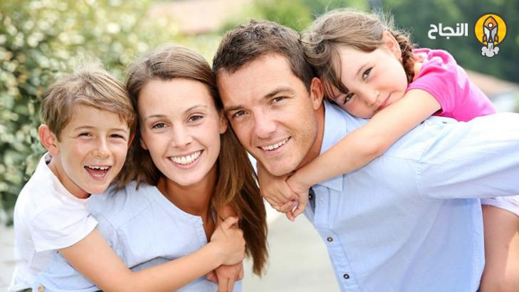

بسم الله الرحمن الرحيم
السادة الأزواج، والآباء، والأمهات، وأفراد الأسر الكريمة، أرحب بكم في هذه المساحة الآمنة، وأشكركم على حرصكم واهتمامكم بفهم ما تمر به علاقاتكم الأسرية والزوجية. أنا د. [عوض الفرجاني]، أخصائي نفسي إكلينيكي ومستشار أسري، وكتبت هذا المقال الشامل خصيصاً لكم.
ما ستقرؤونه طويل ومفصل عن قصد، لأن المشكلات الأسرية والزوجية معقدة، وتستحق منا فهماً عميقاً. لن يكون مجرد سرد للمعلومات، بل سيكون دليلاً يعينكم على فهم جذور المشكلات وطرق علاجها.
الباب الأول: فهم التحدي
المشكلات الأسرية هي أزمات منهجية في نظام العلاقات العائلية، ناتجة عن اختلاف أنماط التربية، تباين التوقعات، ضغوط الحياة، تراكم المشاعر السلبية، وضعف مهارات التواصل.
الباب الثاني: علامات الإنذار
- علامات انفعالية ونفسية: شعور بالإحباط، قلق مستمر، مشاعر الوحدة، فقدان المشاعر الإيجابية، اليأس من التغيير.
- علامات سلوكية وتواصلية: تجنب الحوار، لغة الاتهام، الصراخ، قضاء وقت أطول خارج المنزل، إهمال المسؤوليات، التركيز على عيوب الطرف الآخر.
- علامات متعلقة بالعلاقة: فقدان الثقة، توقف المشاركة في المشاريع، انعدام الحميمية، المنزل كمكان صراع، تدخلات خارجية سلبية.
الباب الثالث: رحلة الإصلاح
- التقييم والتشخيص الشامل: تقييم نمط التواصل، نقاط القوة والضعف، فهم الخلفيات الثقافية، رصد مصادر الضغط.
- بناء المهارات الأساسية:
- مهارات التواصل: الاستماع، لغة "أنا"، التعبير عن المشاعر، طلب الحاجات بوضوح.
- مهارات حل المشكلات: تحديد المشكلة، البحث عن حلول وسط، فصل الشخص عن المشكلة، خطوات عملية.
- إعادة بناء الثقة: الوفاء بالوعود، الشفافية، الاعتذار، منح مساحة للتعلم.
- العلاج المتخصص: جلسات استشارة زوجية، العلاج الأسري، ورش مهارات، متابعة دورية.
الباب الرابع: دوركم كأفراد أسرة
- بناء إيجابي: الاستماع بقلب مفتوح، التركيز على الحلول، الاحتفاء بالإيجابيات، طلب المساعدة، العناية بالعلاقة.
- هدم سلبي يجب تجنبه: اجترار أخطاء الماضي، المقارنة مع الآخرين، التواصل عبر وسيط، إشراك الأبناء في الخلافات، التهديد بالانفصال.
الباب الخامس: الأزمات والانتكاسات
الانتكاسات ليست فشلاً، بل محطات تعلم: توقف عند اشتداد النقاش، فترة هدوء، مراجعة الاتفاقات، تواصل مع المستشار، تذكر الهدف الأكبر: أسرة مستقرة سعيدة.
خاتمة: رسالة أمل
رحلة الإصلاح الأسري تحتاج صبر وحكمة، ولكن ثمارها حلوة. الاختلاف طبيعة بشرية، كل أزمة فرصة للتقارب، الاستثمار في العلاقات الأسرية هو أنجح استثمار، والسعادة قرار.